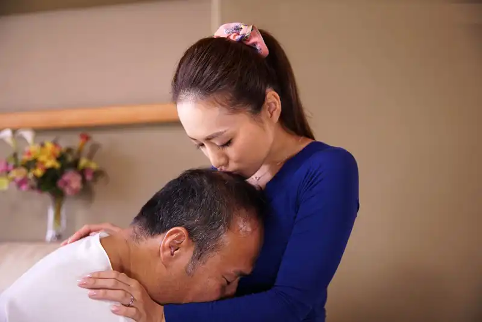

Lúc này Uyên đang dựa vào tường ở cuối giường, còn ông Lưu lết dần xuống dưới lê cái bụng béo trên giường như một con hải cẩu, ông nằm xoay ngược lại với Uyên, đầu ông ở dưới chân Uyên, còn chân ông thì đạp vào tường.
– Uyên… con ơi… bố mỏi tay quá… – Ông Lưu biết con dâu mình đang hưng phấn liền dở trò, ông vừa nói vừa chạm nhẹ vào cái chăn đang bùng nhùng.
– Ahh… ha… dã… – Uyên mở mắt ra nhìn thấy ông Lưu đã nằm ở cạnh mình rồi. Nàng liền dừng lại liếc nhìn trái phải không biết lùi đi đâu vì đây là cuối giường rồi.
– Con cầm giúp bố sóc cho bố một chút… bố sắp ra rồi… bố mỏi tay quá… – Ông Lưu cầm bướm giả đưa cho Uyên.
– Nhưng… – Đang sướng thì bị ngắt quãng, lồng ngực Uyên thở mạnh khiến chiếc chăn tuột xuống bụng lộ ra phần áo hai dây thấp thoáng trong đó là bộ ngực to thả rông, đầu ti nàng nhô ra trong lớp vải của áo ngủ.
– Nhanh lên con… bố sắp ra rồi…

Ông Lưu đút lại cái bướm giả cắm vào chim mình rồi tự tiện nắm vào tay phải Uyên đặt vào đó… Uyên thở mạnh, ánh mắt khép hờ vì bây giờ cơ thể nàng đang rất tê và sướng, nàng chẳng nghe thấy bố chồng nói gì cũng chẳng hiểu gì khi tay của mình lại đang cầm vào cái bướm giả. Như một bản năng, bàn tay phải của nàng nắm lại và sục cho bố chồng, còn tay trái nàng cầm chim giả đút liên tục vào bướm mình. Uyên cũng không hiểu sao mình lại chiều bố chồng như vậy, nhưng lúc này cơ thể nàng hoàn toàn đang thụ động vì quá tê rồi. Cơ thể nàng run lên có lẽ cũng sắp đến đỉnh.
Phần 1: Lão ăn mày
Tất cả mọi sai lầm đều đến từ sự ham muốn của bản thân… trong tất cả những ham muốn của con người, sự khao khát về tình dục là một sự mơ tưởng đáng sợ nhất, mang đến nhiều hệ lụy nhất cho tương lai nếu bạn có những tư tưởng sai lệch quá đà, có những hành vi vượt quá những hành động có thể cho phép.
Bạn là tiến sĩ, giáo sư, nhà khoa học, giáo viên, nội trợ, phụ hồ thợ xây, già hay trẻ, là doanh nhân, là mỹ nhân hay chỉ là một kẻ vô danh tiểu tốt… Hay thậm chí là một lão ăn mày… điều đó chưa đủ tồi tệ ở xã hội hiện đại này hay sao? Chưa hề! Nếu như bạn bị sự ham muốn nuốt chửng và… nếu như bạn không còn là chính mình… đó mới là điều tồi tệ nhất bạn từng thấy.
– “Hmmm… Tại sao đàn ông lại thích cơ thể phụ nữ… nhưng… phải là phụ nữ trẻ… đám con gái đó… chúng nó có một mùi thơm hút hồn, một cơ thể tràn đầy sức sống tuổi xuân, một tâm lý không vững vàng dễ sa ngã bởi những thứ chúng tò mò…”
– Aaaa!!! Chúng mày ơi đi uống trà sữa điii!!!
– Okeee!!! Hôm nay mày bao hay tao?
– Mày! Hôm nọ tao bao rồi hahaha. – Hai nữ sinh cười khanh khách đèo nhau trên chiếc xe Cup màu trắng cùng với đám học sinh lao ra khỏi cổng trường như đàn ong vỡ tổ… chúng đều đang khoác trên mình bộ đồng phục học sinh cấp 3, những chiếc áo trắng tinh khôi của lứa tuổi mới lớn… những chiếc xe máy biển AA và những chiếc xe đạp điện cùng những phương tiện giao thông công cộng chật kín người khi học sinh từng đoàn từng đoàn rời khỏi cổng trường học. Tiếng còi xe và tiếng hát của những người gánh hàng rong xen kẽ nhau tạo lên một bức tranh đa dạng và sôi động của cuộc sống đô thị lúc xế chiều…
Dần dần cảnh vật bắt đầu trở nên bình yên hơn khi ánh hoàng hôn khẽ nhấn nhá vào bức tranh cuộc sống năng động của thành phố… Học sinh mỗi đứa đi một hướng, duy chỉ còn một lão già bẩn thỉu nằm cạnh thùng rác bên đường… trông lão ta chẳng khác gì một đống rác bỏ đi, đôi mắt trùng xuống nhìn chằm chằm vào đám học sinh còn nán lại cổng trường…
“Hmmm… hmm… Lũ học sinh cấp ba… đứa nào đứa nấy nom ngon lành quá… ực! Mông mẩy, ngực to thế kia mà được bóp thì… ực… mà… con… con bé áo trắng kia… nó không về sao…” – Một cô bé tóc dài mặc đồng phục học sinh đang đứng ôm cặp bên đường như đang chờ ai đó đến đón đã lọt vào tầm ngắm của kẻ lang thang ngồi bên đường…
“Con bé chắc là con nhà giàu, trắng trẻo xinh xắn cỡ đó thế mà… hừm… bọn trẻ bây giờ phải gọi là tuyệt phẩm… ước gì được hít cái mùi người của chúng nó…” – Hắn ta nhìn chằm chằm vào cô bé như một kẻ bệnh hoạn, tay không ngừng sờ xuống đũng quần.
“Hả? Con bé… nó đang nhìn về phía này… sao… sao nó lại… đi về phía mình??? Chẳng lẽ nó biết mình nhìn nó sao? Trời đất quỷ thần… làm sao bây giờ… trời!!! Ngực, ngực kìa, con bé này… nó… nó… đang cởi áo ra… tại sao? Giữa thanh thiên bạch nhật… hay mình đang mơ??? Mơ… mơ ư… nếu là mơ thì tội gì không thử chứ? Khặc khặc!!” – Lão ta nhào lên nghiến răng dùng tay bóp mạnh vào ngực cô bé học sinh cấp 3, lão lè chiếc lưỡi bẩn thỉu của mình liếm quanh đầu ti cô bé và vật xuống, lão chĩa con cu to tướng vào giữa háng và đưa người lên phía trước… Lạ một cái, cô bé mặt không có cảm xúc, nhìn càng lúc càng giống một con búp bê, mồm cử động mấp máy nói điều gì đó rất đáng sợ với vẻ mặt lạnh hơn băng nhưng không phát ra tiếng, điều này khiến lão ta mất hứng… bỗng lúc sau… cô bé học sinh cười phá lên “ha ha ha ha!!! Ha ha ha!!!” Nhưng là giọng đàn ông pha với giọng phụ nữ nghe rất kinh hoàng, lão già giật mình, mắt mở to sợ hãi, mồm ú a ú ớ không nói ra tiếng, lão đẩy cô bé ra và chống tay lùi thật nhanh về phía sau… bỗng tay lão chống trượt xuống hố, hẫng một cái lão rơi xuống vực thẳm đen xì. Lão già giật mình tỉnh dậy mở to mắt hoảng hốt nhìn ra đường, mồ hôi đầm đìa.
– Ha ha ha… Chúng mày ơi nhìn kìa haha haha ha ha!!! – Ông Lão tỉnh dậy, ông nhìn xuống dưới thấy con cu mình cửng chĩa thẳng lên trời, làm chiếc quần phồng lên như một quả núi, ông quay sang thấy một lũ trẻ con đang khoác cặp đi học tíu tít với nhau cười nhạo ông, vừa sợ hãi vừa ngại ông nằm co rúm người lại, quay mặt vào trong tường, hóa ra đó chỉ là một ác mộng sáng sớm.
Tiếng chim kêu ríu rít trên những ngọn cây to. Sáng hôm nay là một buổi sáng đẹp trời, ánh nắng bình minh chiếu xuyên quan những chiếc lá rọi xuống đường, giữa những khu phố tấp nập trong lòng thủ đô mọi thứ đã trở nên rộn ràng và đầy sôi động… Trẻ con đi học, người lớn đi làm, người già tập thể dục, những nữ sinh, nam sinh đèo nhau trên chiếc xe gắn máy không đội mũ bảo hiểm phóng vù vù qua những con phố quen thuộc, rồi tiếng rao của những người bán hàng rong, dân văn phòng công sở thì vội vã xách chiếc cặp chạy ra bến xe bus cho kịp chuyến để đi làm… Không một ai quan tâm đến ai… kể cả là một lão ăn mày đang nằm co ro ở góc tường…
Những điều bình dị ấy đã tạo lên một bức tranh đa dạng phong phú của cuộc sống đô thị Hà Nội.
– Ông trưởng phường, ông trưởng phường, lại đây tôi bảo… Tại sao khu phố nhà chúng tôi lại xuất hiện ông già ăn mày này, hắn ở đây lâu như vậy rồi, sao chưa có ai đưa hắn đi, sáng nào cũng nằm tơ hơ ra thế kia, lũ trẻ thì thường xuyên đi qua đây! Thật là bôi bác, bẩn thỉu! – Một bà già đi tập thể dục buổi sáng đang nói với ông trưởng khu phố.
– Ôi dào, đây không phải chuyện của bà, chuyện này khác có người lo. – Ông trưởng khu phố cau mày gào lên, dường như ông cũng đang tất bật cho công việc thông báo hàng ngày mà tổ đã giao phó.
– Lo… Lo cái gì mà lo, người dân kiến nghị lên phường bao nhiêu lần rồi, các ông có giải quyết KHÔNG? Giữa thủ đô văn minh như thế này, sao lại xuất hiện một lão già ăn xin ngồi đây chứ. – Bà già kia cũng không phải vừa, bà vừa nói vừa lườm lão ăn mày mặt hằm hằm, vì quá tức giận bà cầm túi xôi trên tay ném bốp một cái vào lưng lão ăn mày và đi thẳng. Lão ăn mày không tức giận chỉ lủi thủi nhặt túi xôi lên, trong lòng thậm chí còn cảm thấy vui mừng vì mới sáng sớm đã có người cho xôi ăn rồi.
– “Hmmm ngày nào cũng như vậy đó, tôi ngồi ở đây đã từ rất lâu rồi, lúc nào ngủ dậy cái thứ này mà chả dựng đứng lên, chả ai thèm để ý, chỉ có mấy bà già thể dục sáng lúc nào cũng tỏ ra khó ở và nhìn tôi với ánh mắt khinh miệt… thậm chí có người còn ra chửi thẳng vào mặt tôi, đánh tôi và xua đuổi tôi bằng nhiều cách… Tôi cũng chẳng quan tâm, tôi biết phận tôi mà, chính quyền đưa tôi đi rồi lại thả, tôi còn lạ gì nữa… không ai chứa chấp một lão già ăn mày như tôi cả… hô hô hô.” – Lão ăn mày ngồi bệt dưới đất, mặt không quan tâm đến đời, vô tư lự rung chân cầm nhúm xôi bỏ vào mồm nhai nhồm nhoàm.
– “Kể ra làm ăn mày cũng có cái sướng đấy chứ, thích đi thì đi, thích ngủ thì ngủ, ở đâu cũng là nhà… hô hô… Nhưng đôi lúc… thực ra… tôi cũng thấy chạnh lòng, cảm giác như bản thân mình không tồn tại trên cõi đời này vậy, sự tồn tại của tôi như một thất bại của tạo hóa… tôi sống chẳng có một cái nghĩa lý gì, không ai tôn trọng, không ai thương xót… sống từng này tuổi rồi, tôi vẫn chưa cảm thấy bản thân mình có giá trị… và tôi cũng chẳng có ước mơ hay hoài bão gì…”. – Vừa nghĩ ông lão ăn mày vừa nhếch cái đít quần bẩn thỉu lên một tay thò vào trong quần gãi dái, rồi lê chân dựa vào tường.
Tuy là ăn mày nhưng ông sống rất lạc quan, tính tình có hơi nhút nhát nhưng ông rất thích kết bạn, trái ngược với tính cách đó lão cũng là một lão ăn mày khá nhiều mưu mô và khôn lỏi nên lão có khả năng thích ứng tốt trong môi trường đầy khắc nghiệt của cuộc sống đường phố. Điều này cho thấy sự linh hoạt và thông minh của lão dù phải đối mặt với nhiều khó khăn và thách thức… Nhưng lão ta lại có vẻ bề ngoài hơi kinh khủng. Lão có mái tóc hoa râm nửa đen nửa bạc pha với màu của bụi bẩn, nên nó rối bù bết dính lại… Lão mặc một chiếc áo rách nách và chiếc quần rách đũng, rách tứ tung, nói chung trang phục của lão chẳng khác gì một cái rẻ rách. Với một cơ thể gầy gò nhỏ bé, lão chỉ cao có 1m55, chân lúc nào cũng đi đất và đeo một cái túi nhỏ màu nâu bẩn thỉu bên người, lão đi khắp nơi với một gương mặt khắc khổ, nhăn nheo của một lão già, làn da đen đen bẩn bẩn vì sương gió cuộc đời. Dù vẻ bề ngoài của lão không được người ta chú ý, nhưng mỗi ngày lão ta vẫn chăm chỉ lang thang đi khắp nơi để kiếm sống, tối đến lại chui vào góc tường nhỏ này để ngủ… Một ngày vô vị của một kẻ ăn mày lang thang chốn thành thị thủ đô…
– “Hmmm nếu chẳng phải nghe nói nhiều kẻ xuống thủ đô làm ăn xin được bữa nào ra bữa ấy thì tôi đâu có bỏ quê hương để lang thang đến đây. Kể ra tôi cũng ở đây được một thời gian khá dài rồi, nhìn ai cũng bận rộn, trên gương mặt họ hiện lên vẻ khó gần, họ chẳng thèm quan tâm đến người họ gặp bên đường chứ đừng nói một kẻ hạ lưu như tôi. Hôm nọ tôi có nghe mấy bà già xì xào to nhỏ về tôi, họ nói tôi sẽ bị bắt đi vì tôi bị điên gây nguy hiểm cho xã hội… nực cười, tôi cảm thấy ở đây họ sống rất thiếu tình cảm, không giống người dưới quê, ngồi lê la ở ngoài chợ buổi sáng ít cũng được cái bánh mì dở… haizzz… ở đây lục thùng rác kiếm ăn là điều phải làm, chốn thành thị bận rộn tấp nập, đến một kẻ ăn mày như tôi cũng phải đi làm mới có cái ăn… ngồi không chẳng bao giờ mỡ tự đến miệng mèo, không lao động coi như chết đói… Haizzz… Nhưng!!! Nhưng duy nhất có một lần, cái nhà mà tôi đang dựa lưng vào tường nhà họ đây này, cách đây gần một năm nhà họ tổ chức lễ cưới, linh đình lắm, cực kỳ hoành tráng. Chẳng biết như nào, tôi cũng chẳng quan tâm lắm, việc họ họ cứ làm, tôi ngồi cứ ngồi, cứ nằm, ra đuổi thì tôi đi… Nhạc nhẽo ầm ầm nghe cũng vui tai nhưng khó ngủ, mùi thức ăn thơm nức càng khiến tôi khó ngủ hơn, hôm đó tôi rất đói, đang tính xem họ có vứt đồ thừa gì không có lẽ sẽ được một chầu béo bở đây… và lúc đấy đã xảy ra một việc mà không bao giờ tôi có thể quên…”
… Ngày hôm đó…
– Ông ơi! Ông ơi… ông…
Lão ăn mày đã quen với sự vô tâm của mọi người ở đây, nên dù có tiếng gọi nhưng ông vẫn không nghĩ giọng nói trong trẻo đó dành cho mình nên lão vẫn nằm nhắm mắt rung đùi rung chân… nhưng tầm vài giây sau lão bị đá nhẹ một cái vào đùi, lão ăn mày liền cau mày mở mắt.
– Ông ơi… Cháu mang cho ông ít thức ăn nè… – Một cô bé xinh xắn hơi cúi người xuống tay đang cầm một đĩa thức ăn đưa cho lão ăn mày.
Lúc đó lão không thể tin vào mắt mình, đang đứng cạnh lão là một cô gái rất trẻ, cô gái này hình như không phải người ở đây, ông chưa nhìn thấy bao giờ, trông rất xinh, và thân thiện, cô ấy mặc một chiếc áo dài trắng tinh, chân đi đôi hài đỏ vừa đá vào đùi lão, đầu đội khăn vấn đỏ nhìn rất nổi bật, với gương mặt xinh xắn dễ thương, cô gái mỉm cười và đặt một đĩa xôi gà xuống trước mặt lão, khiến lão nuốt nước bọt không thể tin vào mắt mình. Lúc này lão mới để ý cô gái đó chắc chắn là cô dâu của đám cưới rồi, nụ cười của cô ấy khiến lão ngỡ ngàng trước hành động lạ lùng nhưng hết sức tử tế của cô gái… cô ấy có một mùi thơm rất con gái, nó thoang thoảng bay vào mũi khiến lão càng trở lên lúng túng, cô ấy như một nữ thần vậy, lão nhồm người ngồi dậy thì cô gái trẻ cười và quay người bước về phía rạp cưới, cô vừa đi vừa ngó nghiêng sang hai bên chân mình và kéo tà váy của áo dài ra đằng trước phủi bụi, bất chợt phần mông bị lộ ra trong lớp quần voan mỏng màu trắng, hiện cả viền quần lót và đập vào mắt lão ăn mày, lão cầm đĩa xôi mắt mở to nhìn vào bộ ngực vừa tròn vừa mẩy trước mặt, với chiều cao thế kia cô ấy sở hữu đôi chân rất dài, chắc hẳn phải cao trên m7, cô gái bước đi khiến bộ mông to của cô đánh qua đánh lại trông rất gợi dục… Lão ăn mày há hốc mồm nhìn cô gái đi khuất mới bừng tỉnh trở lại… Chưa bao giờ lão thấy cô gái nào đẹp như vậy. Với khí chất đó, cô ấy giống như tiên nữ hạ phàm, chắc chắn không phải phàm phẩm nhân gian, thật sự quá tuyệt vời.
– “Đẹp quá… đẹp quá… Sao trên đời lại có người đẹp đến vậy, tôi đã lang thang ở cái khu này cả mấy năm trời, ngày hôm nay, mới gặp được một cô gái xinh xắn tử tế đến mức này!” – Sau hành động ấy của cô gái, lão có suy nghĩ khác về con người ở đây, không ngờ con gái thủ đô cũng dịu dàng, tử tế và xinh đẹp đấy chứ.
Ngày hôm đó là ngày lão cực kỳ hạnh phúc, lần đầu tiên lão được ăn ngon như vậy, đến bây giờ lão vẫn giữ chiếc đĩa đó chờ có một ngày được trả lại. Nhưng lão rất ít khi gặp cô gái ấy, nhiều lần lão cố ngó vào trong nhà nhưng vô vọng, vì tường cao quá, chỉ có duy nhất một cái lỗ nhỏ nhìn vào trong sân và bậc thềm nhà, lão lại già rồi, không dám leo trèo, mà có leo người ta tưởng trộm lại đánh thì lão chỉ có nước chết. Nếu nhớ không nhầm thì năm nay lão đã hơn 70 tuổi rồi, cái tuổi mà nhiều người có lẽ đã mãi ra đi khỏi cuộc đời tươi đẹp này, nhưng chính lão cũng không hiểu vì sao lão lại sống dai đến vậy, đã vậy lại còn rất khỏe khoắn.
Tuy lão là một kẻ ăn mày, là người sống ở đáy xã hội nhưng lão vẫn có ham muốn riêng của bản thân, vẫn có suy nghĩ và tâm sự như một người bình thường, tuy nhiên tư tưởng của lão có phần thoải mái và vô tư hơn rất nhiều so với những lão già khác cùng tuổi. Lão ăn mày là một kẻ nhút nhát, tính cách này cũng xuất phát từ sự đối xử của người dân nơi đây, họ luôn đe dọa và làm lão sợ, một phần đó cũng do lão tự ti về vẻ bề ngoài và thân phận của mình. Ngày hôm ấy là ngày lão nhận được sự tử tế đầu tiên trong cuộc đời từ người khác. Tuy vậy, để sống ở nơi thành thị khắc nghiệt này, trong lão dần xuất hiện những tính cách khôn lỏi và xảo quyệt để đối chọi lại với cuộc sống xung quanh lão…
Ham muốn nhục dục thì ai cũng có, kể cả là một lão ăn mày… thậm chí lão còn có một nhu cầu rất cao. Từ cái hôm được gặp cô gái đó, tối nào lão cũng nhớ lại bộ mông ấy, lão hay chui vào một góc khuất, lôi con cu ra nhắm mắt tưởng tượng, lão luôn ao ước được ngửi mùi thơm đó lại một lần nữa, ao ước được nhìn lại khuôn mặt xinh xắn đó và ao ước được sờ mó bộ mông cong vút ấy, lão vừa sóc vừa tưởng tượng cơ thể của cô gái đó sẽ như thế nào, và nghĩ đến lúc mình được được úp mặt vào bộ mông cong ấy, rồi thỏa thích sờ mó cơ thể của cô gái đó… mùi vị của gái trẻ khiến ông không thể kìm nén được… Tầm vài phút chân gồng tay xóc óc tưởng tượng, lão bắn tinh lên không trung cả mét, tuy không được đặc như thanh niên nhưng lượng tinh trùng của lão khá nhiều và không biết do cơ địa hay bệnh tật gì mà mỗi lần lão bắn tinh thường bắn rất mạnh và xa.
“Ông lão ăn mày”, đây là biệt danh mà người dưới quê hay gọi ông, ông năm nay đã hơn 75 tuổi, có lẽ 75, 76 hoặc hơn, dáng người gầy thấp nhỏ bé, ông bắt đầu làm ăn mày từ thời chiến tranh, cái thời mà thanh niên phải dũng cảm xông pha chiến trường nhưng lão ăn mày lại chọn cách giả điên để trốn nghĩa vụ và sau đó lão đã bỏ nhà đi ăn mày từ rất sớm. Lão là người hèn nhát nhưng đây là cái cách mà lão lựa chọn cuộc sống cho riêng mình, và lựa chọn đó đã khiến não phải trả giá rất đắt. Sinh ra đã nhỏ bé xấu xí lại còn làm ăn mày cả đời, vì vậy ông chưa hề có người phụ nữ nào để ý đến… Đến nay ông vẫn chưa được chạm vào một người phụ nữ nào, chim ông 75 năm chỉ để đi đái và chỉ được làm bạn với bàn tay phải.
Lão ăn mày đặt chân xuống đất Hà Nội đã được vài năm, dáng người nhỏ bé với một gương mặt đen nhẻm, bẩn thỉu và nhăn nheo, đầu tóc bù xù bết dính, tay trái cầm chai rượu rẻ tiền nhặt được ở thùng rác, tay phải cầm điếu thuốc hút dở của một người đàn ông vừa ném tóp ra đường… những ngón tay chai sạn và cứng nhắc chứa đựng những dấu vết của cuộc sống khốn khó và cay đắng… Lão có dáng đi khom lưng nhưng thoăn thoắt với đôi chân gầy gò… nhưng trông vẫn rất chắc chắn, gân guốc và khỏe mạnh, đôi mắt u ám nhưng vẫn rất tinh tường… hàng lông mày bạc phơ vì tuổi tác… Lão là hình ảnh sống động về sự bất hạnh và hoang tàn.
Lão ăn mày đôi lúc đi lại quanh phố nhặt nhạnh chai lọ để đổi lấy vài nghìn mua bánh mì. Ở tuổi này nhưng lão vẫn còn rất khỏe, có những hôm lão lang thang giữa trưa trời nắng hàng tiếng đồng hồ cũng không vấn đề gì. Ở cái tuổi gần đất xa trời này đáng nhẽ người ta phải con đàn cháu đống nhưng riêng lão lại chỉ có một mình suốt hơn 70 năm qua… không bạn bè, không người thân thích… Âu đó cũng là quả báo suốt phần đời còn lại của lão. Thậm chí con cu của lão còn chưa được đụ lần nào, nhiều lần lão tưởng tượng cảm giác được địt gái ra sao, ham muốn đến mức còn tự dùng tay mình tạo một lỗ tròn đặt ở tường rồi dùng hông đẩy tới, đẩy lui, được vài cái thấy chẳng khác gì thủ dâm nên thôi, lão đành bỏ cuộc. Một ông lão bị trả giá quá đắt cho quyết định của mình, một ông lão bần hèn đáng thương, sự khoái cảm cơ bản của một người đàn ông đó là biết được nhiệt độ nóng cùng với nước nhờn bên trong âm đạo của phụ nữ nó gây nghiện như thế nào còn chưa được cảm nhận, quả thật đó là một vườn địa đàng mà ông chưa hề được chạm tới…
Nhưng… ông trời luôn đối xử công bằng với tất cả mọi người, ông lấy đi mọi thứ của lão ăn mày nhưng bù lại cho lão một con cu to khổng lồ, khi cửng lên nó đạt tới 25cm và to như cổ tay người lớn… hàng gân guốc quấn quanh chim lão tạo cảm giác lại càng to một cách đáng sợ, bất kể ai nhìn thấy đều sợ hãi dù đó là đàn ông hay đàn bà. Có lẽ với một sức khỏe phi thường ở tuổi 75 cũng là một món quà mà ông trời ban cho lão.
– CẠCH!!! CHIẾU TƯỚNG HÀ HÀ HÀ… ông thua tôi rồi nhé ông Lý!
– Ông Lưu quả là cao cờ, cao cờ, tôi xin bái phục!!! Ha ha…
Lão ăn mày đứng ngó vào một kẽ tường bị nứt ở góc vườn hậm hực cáu gắt, vì bên trong có 2 ông già đang đánh cờ với nhau ngoài sân dưới tán cây bàng, một ông béo một ông gầy.
“Hai cái thằng già này sao to mồm thế, không để ai ngủ trưa à, mà quái lạ, dạo gần đây hai ông này cứ đến giữa trưa lôi cờ ra ngoài sân đánh, bộ giàu quá hóa điên ư?” – Lão ăn mày hậm hực đứng ngoài cay cú vì đang ngủ trưa bị cú hét của ông Lưu bên trong làm giật mình. Lê Quang Lưu năm nay 63 tuổi, dáng béo lùn, bụng phệ, rất thích chơi cờ tướng, là một người bố đơn thân, vợ mất sớm, một mình ông nuôi nấng hai đứa con trai trưởng thành, và ông là tổng giám đốc doanh nghiệp đá quý nay đã nghỉ hưu để lại công ty cho hai đứa con trai quản lý.
– Bố! Hai bố ăn táo, con vừa gọt đó! – Ở trên thềm nhà xuất hiện một cô gái xinh đẹp đang bê đĩa táo xuống sân. Lão ăn mày đứng ngoài mắt trợn tròn lên hưng phấn, là cô gái đợt nọ cho ông đĩa xôi gà, chính là cô ấy, trong mắt lão ăn mày cô ấy đẹp như một nữ thần vậy từ cốt cách cho đến nhan sắc. Người lão ăn mày râm ran khó tả khi nhìn thấy cô gái ấy… cô ấy đang mặc bộ ngủ màu hồng ở nhà, mái tóc búi cao bởi một chiếc nơ màu đỏ nhìn toát lên vẻ hiền dịu xinh xắn của một tiểu thư nhà giàu, trông cô gái ấy lại rất lễ phép nữa, lão ăn mày nuốt nước bọt, càng ngày lão càng có có cảm tình với cô. Đã từ lâu rồi lão rất muốn gặp lại cô gái đó thêm một lần nữa để trả đĩa xôi mà rình mãi không thấy cô gái ấy ra ngoài, có lẽ lão và cô gái đó không có duyên, đến tận bây giờ mới có dịp được gặp lại…
– Cái Như đấy hả, ngồi xuống đây xem thế cờ vừa rồi, bố con bị dụ vào thế “điệu hổ ly sơn” không chống cự được đành xin thua đây hà hà hà! – Ông Lưu nhìn cô con dâu tươi cười và chỉ xuống chiếc ghế gỗ cạnh bàn cờ. Bên ngoài lão ăn mày vui mừng vì vừa biết tên của ân nhân giúp đỡ mình. “Như… Cái tên thật đẹp…” – lão ăn mày nghĩ thầm.
Trần Ngọc Tố Như, sinh năm 2000 năm nay 21 tuổi (tính theo năm 2020). Cô đang là sinh viên năm 3 trường đại học quốc tế RMIT. Đám cưới tổ chức linh đình cách đây một năm là đám cưới chung của hai chị em nhà họ Trần, cưới hai công tử nhà họ Lê. Như và chồng trước đó yêu nhau cũng khá lâu, hai gia đình cũng đã thân thiết qua lại với nhau. Để tránh việc phiền phức khi tổ chức nhiều lần đám cưới, hai bên đã quyết định làm đám cưới chung mặc dù Như chưa học xong đại học. Ở trường Như là hoa khôi RMIT. Cô sở hữu chiều cao 1m72, trong ba chị em Như là người cao nhất, tuy khá cao so với chiều cao trung bình của người Việt nhưng cô ấy vẫn toát ra sự thon gọn và uyển chuyển, với đôi chân dài cân đối như vậy bất kể trang phục nào Như mặc lên cũng trở nên lôi cuốn hơn. Như có một gương mặt xinh xắn đáng yêu, ánh mắt sáng trong, đôi môi mềm mại luôn tạo ra sức hút khó cưỡng. Cô có một mái tóc màu đen dài đến giữa lưng. Ngoài ra Như còn có tính cách khiến người ta ấn tượng. Cô ấy rất ngoan ngoãn và hiền lành, luôn biết cách thể hiện sự lịch thiệp và tôn trọng người khác… đặc biệt cô ấy rất tốt bụng. Cô ấy luôn toát lên cốt cách của một tiểu thư nhà gia giáo. Ngược lại với đức tính của cô, Như là người có body rất bốc lửa, ngoài bộ mông to tròn và đôi chân dài thẳng đuột cô ấy còn có bộ ngực to nhất trong ba chị em, nhiều lúc Như còn cảm thấy hơi bất tiện và xấu hổ vì điều đó.
– Thật ạ! Bố Lý dễ mắc bẫy quá hihi? Thế mà trước bố bảo với con bố chơi cờ giỏi lắm. – Như vừa nói vừa ôm miệng cười nhìn sang ông Lý, bố đẻ của cô.
– Con gái ngoan, bố làm sao thắng được bố Lưu, con không biết trước bố Lưu đi thi đấu giải cờ tướng ở quận sao? – Ông Lý vừa nói vừa xoa đầu Như. Ông Trần Hoàng lý, năm nay 60 tuổi, ông dáng cao nhưng lại rất gầy, mặt mũi lộ ra vẻ khắc khổ của một người cha tận tụy, sương gió, ông đẻ khá muộn, năm 37 tuổi mới có đứa con gái đầu lòng, vợ ông không may qua đời do bệnh nặng cũng đã được 10 năm, khiến ông phải gà trống nuôi ba đứa con gái. Ông làm trong quân đội, vừa về hưu. Ông Lý và ông Lưu có rất nhiều điểm chung nên từ lâu hai ông đã là những người bạn già của nhau, hai gia đình cũng chỉ cách nhau có vài km nên khi rảnh ông Lý thường đến chơi cờ với ông Lưu, cơ bản cũng để thăm hai cô con gái của mình.
– Thật ạ! Bây giờ con mới biết đó – Như ngạc nhiên, nàng cũng biết chơi cờ tướng, thỉnh thoảng vẫn chơi với bố chồng nhưng hôm nay cô mới nghe nói bố chồng mình đã từng đi thi đấu nên nàng ngạc nhiên quay sang nhìn ông Lưu.
– Hà hà! Nhưng bố Lý của con cũng là một đối thủ đáng gờm đó, mãi bố mới lừa được ông già này vào thế đấy! – Ông Lưu quay sang cười và vỗ nhẹ vào lưng Như, sau đó ông để tay ở đó, qua lớp áo mỏng ông Lưu cảm nhận được chiếc đai áo con và tấm lưng ngọc ngà của con dâu tuổi 21, Như là một cô gái dịu dàng, cô chưa bao giờ làm phật lòng bất cứ một ai cô gặp, đối với bố chồng cô cũng vậy, cô luôn cư xử đúng mực và chưa bao giờ làm bố chồng thấy không thoải mái, đặc biệt cô khá vô tư, cô cũng chẳng bận tâm tới việc ông Lưu đang để tay trên lưng cô, vì cô nghĩ đơn giản ông Lưu cũng giống ông Lý bố đẻ mình, nên nàng chẳng mấy để ý tiểu tiết.
– NHƯ! Đi vào nhà chị bảo! – Đứng trên thềm lại xuất hiện một cô gái xinh đẹp không kém gì Như, lão ăn mày không nhìn rõ mặt, lão chỉ thấy dáng một cô gái đang mặc quần đùi, chân cũng dài và trắng chẳng khác gì Như, hai tay khoanh lại, giọng nữ tính nhưng rất đanh thép, trông khá là ghê gớm. Cô ấy là Trần Ngọc Tố Uyên sinh năm 98 năm nay 23 tuổi, chị ruột của Như, cô làm ở công ty du lịch, tuy rất nhiều lần chồng cô đề nghị cô vào làm cùng công ty đá quý nhưng Uyên từ chối với lý do muốn tự chứng minh bản thân, và một phần do cô cũng là một tín đồ đam mê du lịch. Trái ngược với cô em gái, Uyên là một cô gái cá tính, thông minh, cô có ánh mắt sắc sảo, mái tóc hung dài quá lưng, nét đẹp của Uyên giống vẻ đẹp của những diễn viên Hàn Quốc, tuy có phần đanh đá, ghê gớm. Nhiều lúc hâm hâm khó đoán, nhưng cô luôn hết mực thương yêu các em mình, Uyên có chiều cao thấp hơn Như một chút, cô cao 1m70, mông ngực thì khỏi phải bàn, em 10 thì chị cũng phải 9. 9, Nàng có một dáng đi nhìn rất gợi dục, chẳng giống ai… Thời đi học Uyên được các bạn mệnh danh là “Uyên mông mẩy” vì dáng đi đó, vòng 1 của Uyên có phần nhỏ hơn Như một chút, nhưng vẫn thuộc loại to. Như 10 thì Uyên cũng phải 8.
– Vâng! Hai bố cứ chơi đi nha, con vào nhà xem chị Uyên bảo gì đã ạ! – Nói xong Như đứng lên chạy vào trong nhà. Trong một tích tắc ông Lưu quay liếc nhìn bộ mông tròn của cô con dâu, sau đó ông lại liếc lên chỗ Uyên.
– Cái Uyên cũng ra đây đi, xem các bố chơi cờ, có ích cho trí não lắm đấy con! – Ông Lưu cười nói.
– Thôi các bố cứ chơi đi, giữa trưa lôi nhau ra sân chơi cờ! Con cũng chẳng khoái cái món đó – Nói xong Uyên quay người đi vào trong nhà cùng Như. Ông Lưu chỉ biết cười nhạt và quay lại bàn cờ, cô con dâu cả đôi lúc khiến ông cũng hơi ngại vì cảm giác con bé chẳng nể nang gì, chẳng bù cho cái Như.
– Bác Lưu thông cảm, hai đứa nhà tôi, một đứa bướng bỉnh, một đứa hiền lành, ở nhà tôi cũng không trị được chúng nó, từ ngày mẹ chúng nó mất, một mình thân tôi nuôi nấng chúng nó cũng không tránh khỏi thiếu sót. – Ông Lý lắc đầu ngại ngùng… ông liếc nhìn Uyên, trước đây con bé cũng ngoan lắm, nhưng từ khi mẹ nó mất tính nó thay đổi hẳn, có lẽ vì là chị cả nên con bé cũng ý thức được mình phải thay mẹ chăm lo cho các em.
– Ôi dào ông cứ lắm chuyện, chúng nó làm dâu nhà tôi bao nhiêu lâu nay rồi, tôi lại còn không hiểu chúng nó nữa khà khà. Tôi phải cảm ơn ông mới đúng, đẻ ra hai cô con gái xinh đẹp, tài giỏi, duyên phận thế nào hai chị em nó lại lấy hai thằng nhà tôi. Mà nhé! Từ khi hai đứa nó về làm dâu, tôi thấy nhà cửa vui lên hẳn, hai thằng nhà tôi cũng ít chơi bời hơn, điều này tôi phải cảm ơn hai cô con gái của ông mới đúng. – Ông Lưu nhìn ông Lý ánh mắt trìu mến.
– Bác cứ nói quá, nhà tôi còn con vịt giời nữa kia kìa, phải chăng bác có thêm thằng nữa để tôi gả nốt cho ha ha… – Hai ông già ngồi cưới khoái trí ngoài sân giữa trưa nắng.
Bên ngoài lão ăn mày nghe xong câu chuyện cũng hiểu cơ bản, nhà ông Lý có 3 cô con gái, hai cô đã gả cho hai thằng con trai nhà ông Lưu này. Ngẫm nghĩ lão lùi lùi vài bước ra khỏi bờ tường ngước nhìn lên ngôi biệt thự mà bấy lâu nay ông dựa vào, trước nay ông không để ý, bây giờ ông mới thực sự bị choáng ngợp bởi sự hoành tráng của nó, ngôi nhà rất to và rộng. Nhà này chắc hẳn thuộc loại rất giàu có ở đất thủ đô. Bảo sao lão ăn mày luôn thấy nhiều chiếc ô tô khác nhau đi ra đi vào căn nhà này. Đó cũng là một phần lão ăn mày chẳng gặp Như bao giờ vì nàng có bao giờ đi bộ ra ngoài đâu.
“Hmmm Nhà giàu, con cái thành công, con thảo dâu hiền… Thật đáng ngưỡng mộ”. – Lão ăn mày đứng ngẩn ngơ trước ngôi biệt thự hoành tráng giữa lòng thủ đô, ông bỗng chạnh lòng… trong lòng ông bỗng có biết bao tâm sự, biết bao tiếc nuối, ông cảm thấy thèm muốn một chút không khí gia đình, ông cảm thấy mình như con số 0 trong cuộc đời này, cuộc sống ông thật quá vô nghĩa… thật bất công… Ông trời đã ban cho ông một vẻ bề ngoài xấu xí sao lại nỡ ban cho ông luôn địa vị của một kẻ ăn mày? Một kẻ ở đáy xã hội như thế này chứ…
Chính lão ăn mày cũng không biết bấy lâu nay lão không bị chính quyền đưa đi là do có sự nhúng tay của ông Lưu. Ông Lưu rất có quyền lực ở khu này, vì ông là người có tiền lại rất có tiếng nói, được mọi người trong phường kính nể. Ông Lưu không thích nuôi chó, nhưng ông lại rất sợ trộm vào nhà nên từ lúc ông để ý thấy có một lão ăn mày cứ lang thang quanh khu phố mình, lại hay lão ta thích ngồi cạnh cổng nhà ông, vì nhà ông Lưu có một bờ tường khá dài, có vài mái che của ki ốt (tên gọi của cửa hàng tiện lợi những năm 90) cũ ngày xưa nên ông đã nảy ra một ý tưởng để lão ăn mày ngồi ở đó trông nhà chứ không có ý đuổi lão ta đi, cứ như vậy trong một thời gian dài, lão ăn mày đi đến đâu, ngồi đâu cũng bị xua đuổi, chỉ có bờ tường này làm lão có cảm giác thoải mái và không ai đuổi lão đi. Nơi đây lại cạnh một cái ngõ cụt có vài ngôi nhà là ki ốt cũ, bây giờ người ta làm chỗ để rác, đằng sau ki ốt là một ngôi nhà cao tầng ngồi ở đây khá mát mẻ nên lão quyết lấy đó làm đại bản doanh. Lão đã vô tình bị ông Lưu lợi dụng. Nhưng lão ngồi đây cũng có mục đích riêng của mình là được gặp lại ân nhân và cũng vì đây là nơi lão cảm thấy thoải mái nhất… Thôi thì ai cũng vì mục đích và ý đồ riêng của bản thân… một sự trùng hợp khá hài hòa giữa lão ăn mày và ông Lưu… Lão ăn mày cũng không ngờ đến nơi đây lại là nơi sẽ thay đổi cuộc đời lão mãi mãi, đơn giản bởi ông trời không lấy đi của ai tất cả… Ông trời sẽ thương thay cho kẻ đã bị đày đọa suốt một kiếp người…